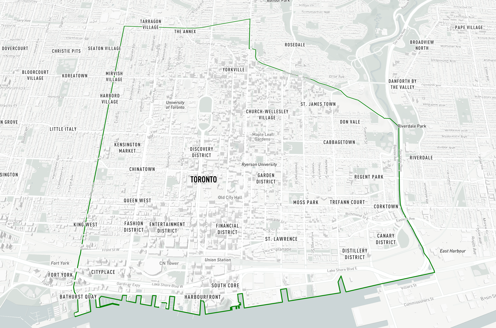

Ratio.City - First 8 Months
This post summarizes work I was involved in designing and developing during my first 8 months at Ratio.City. We were in the middle of collecting and cleaning new data layers, and experimenting with concepts and user interface for the massing and analysis tools, defining core features, experience and value.
As part of my work at RATIO.CITY we are creating a smart cities platform consisting of mapping and analysis tools for developers, architects and planners to easier identify and explore real estate development opportunities, with a focus for now in the City of Toronto.

The tools we are building make exploring and understanding intersecting policy areas fast and easy, with data explorable in an interactive 3D map, and the ability to summarize information by property parcel.
You can test out the majority of our tools by signing up for a guest account following the instructions here.
We encourage you to reach out and let us know what you think of what we have built so far, and we have a lot of exciting things in the works that we can't wait to share with you! If you would like to organize a demo please do so here.
Map Layers
We have spent time collecting, cleaning and optimizing layers available from the City of Toronto Open Data Portal and creating our own in the case they are not available from the city. There are many other layers available than what is show below, with new ones added all the time.
Zoning By-Law 569-2013 - Categories
(with direct links to Chapters, Sections and Site Specific Exceptions, and previous zoning by-laws where applicable)

Zoning By-Law - Height Limits extruded in 3D
(compare existing building heights against Zoning By-Law As of Right Height Limits)
Official Plan - Land use

(Official Plan - Land Use and Avenues)
Official Plan - Secondary Plans

Downtown Plan Official Plan Amendment - TOcore
Official Plan - Natural Heritage Network (Areas and Lines)
Transit - Existing / Under Construction / Proposed (Stations, Lines and MTSA/Development Zone buffers)
(Existing stations and lines presented in this map)
Transit - Existing / Under Construction / Proposed with Residential Zoning
Transit - Zoning By-Law Categories around St Clair TTC Subway station
Transit - OP Land Use around St Clair TTC Subway station
Heritage Districts and Registered Properties
Search
As we build up, clean and improve datasets, we are also making them easily searchable, with the intention to identify parcels of land throughout the city that match specific target criteria. Customized filters can be based on zoning regulations, and existing use to be expanded to include other filters such as urban structure, physical characteristics such as size and currently lot coverage, and proximity to transit or by neighborhoods.
Site Summary
We hope for many users that having all these layers in one location will already be very valuable, however, the main question that they will want to answer is which policy affects property parcels. You can instantly summarize policy intersecting multiple sites, along with other metrics and relevant site characteristics, with direct links to official documents.
Massing Generation
You can also generate realistic 3D building massing proposals instantly, determine land value at the touch of a few buttons, and generate shadow studies with built in tests checking to warn you new net shadows that touch parks.
Instant site analysis and 3D built form evaluation provides quick information of various building massing options based on Municipal Guidelines and regulations and customize based on your target niche, pro forma requirements and neighborhood precedents.
Development Potential - Massing Generation
4.1X | GFA = 165,00
5.2X | GFA = 212,00
6.2X | GFA = 250,00
Shadow Study - March, 21 (09:18 am - 18:18 pm)
Shadows touching parks in red

Shadow Study - June, 21 (09:18 am - 18:18 pm)
Shadows touching parks in red
Shadow Study - September, 21 (09:18 am - 18:18 pm)
Shadows touching parks in red
Shadow Study - December, 21 (09:18 am - 16:18 pm)
Shadows touching parks in red
Shadow Study - December, 21 (09:18 am - 16:18 pm)
Net new shadows in blue, net new touching a park in red, net new with neighbourhood covering park already in purple.